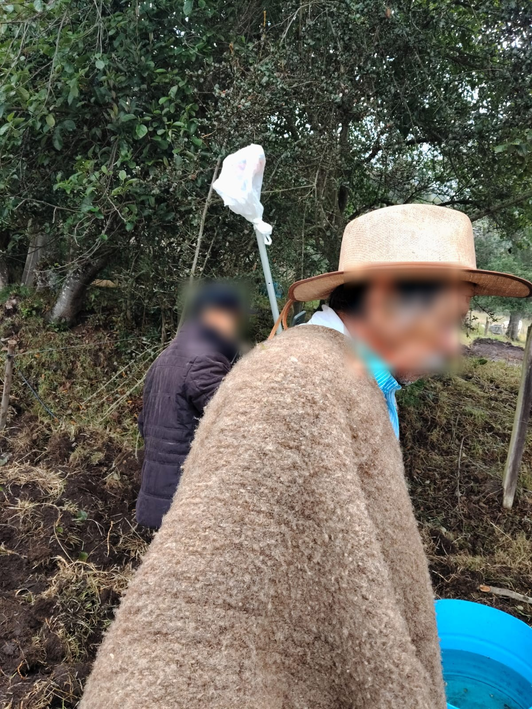
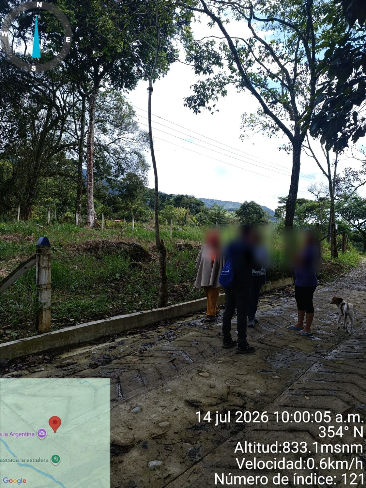
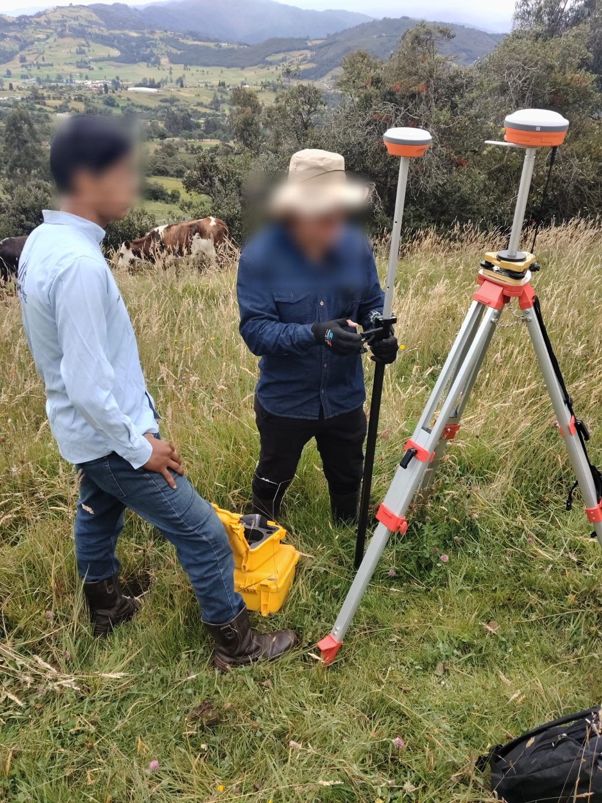
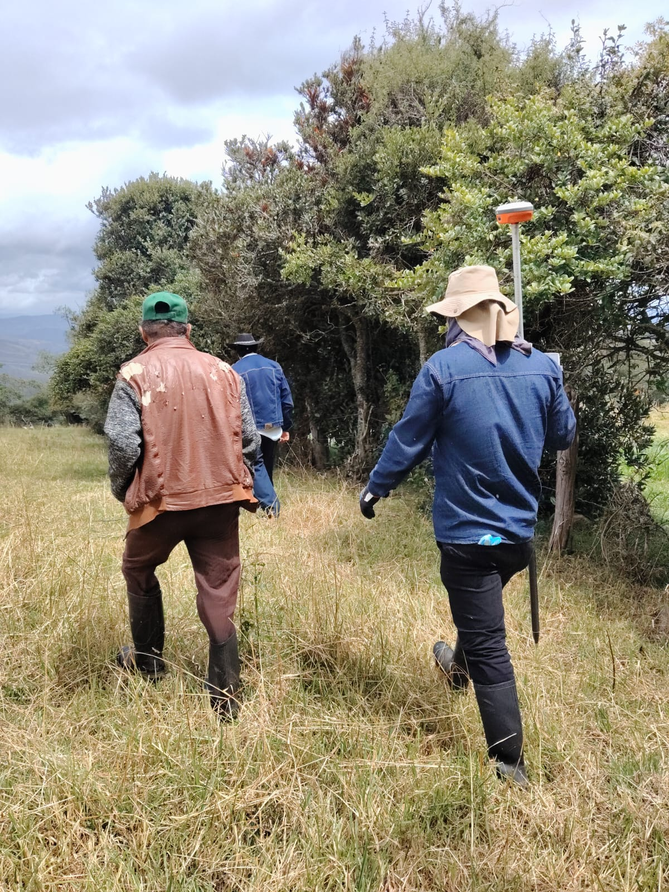
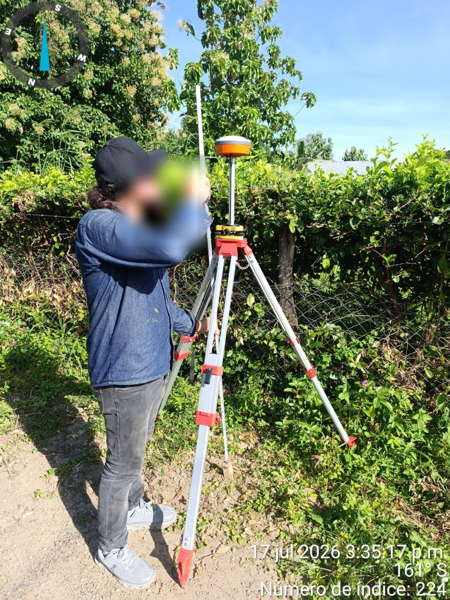

Medición y representación del terreno
Levantamiento topográfico
Un levantamiento topográfico recoge y representa información del terreno, como su forma, dimensiones, linderos visibles y elementos relevantes. El resultado puede servir como insumo técnico para planear proyectos, revisar áreas o preparar trámites relacionados con el inmueble.
¿Cuándo puede ser útil?
- Para conocer mejor la forma y las características físicas del predio.
- Cuando se necesita contrastar medidas de campo con planos o documentos existentes.
- Como información de apoyo para proyectos, diseños o gestiones prediales.
Nuestro trabajo en campo
Topografía rural
1 / 5




